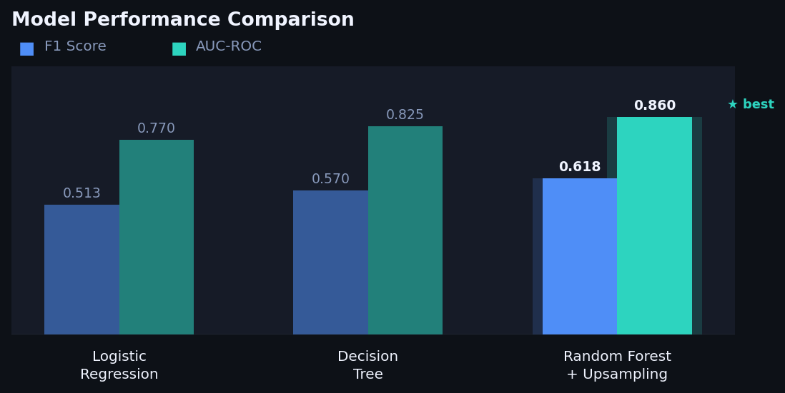

Hola, soy
Juan Daniel
Hernandez Vargas
Científico de Datos & Candidato a Especialización
Modelos estadísticos avanzados y soluciones basadas en datos para los sectores Bancario y Fintech.

Hola, soy
Científico de Datos & Candidato a Especialización
Modelos estadísticos avanzados y soluciones basadas en datos para los sectores Bancario y Fintech.
Soy Científico de Datos en proceso de completar una especialización profesional en Analítica Estadística. Mi formación en Biología me proporcionó una sólida base investigativa, que ahora aplico a las complejas arquitecturas de datos del mundo financiero.
Me enfoco en conectar los datos brutos con la toma de decisiones estratégicas, específicamente en el ámbito del Análisis de Riesgo para los sectores Bancario y Fintech. Me especializo en desarrollar modelos explicables que revelan el "por qué" detrás de las tendencias conductuales y financieras.
Más allá de mis actividades técnicas, soy un solucionador de problemas apasionado que disfruta analizar patrones de datos para mitigar riesgos y optimizar el ROI en entornos de alta exigencia.
Especializado en probabilidad, regresión y pruebas de hipótesis.
Modelos predictivos enfocados en Churn y Analítica de Riesgo.
Soluciones basadas en datos específicamente para el sector financiero.
Decodificando modelos complejos con SHAP para la transparencia del negocio.
Científico de datos especializado en Analítica Estadística y Gestión de Riesgo para los sectores Bancario y Fintech.
Arrastra o desliza para explorar →

Beta Bank
Identificación de segmentos de alto riesgo — clientes mayores e inactivos en Alemania — permitiendo campañas de retención dirigidas. Random Forest + SMOTE logró el mejor equilibrio entre precisión y recall.
Datos SOAT — Fasecolda
Análisis exploratorio de los siniestros del seguro obligatorio vehicular (SOAT) en Colombia — frecuencia de accidentes, severidad de reclamaciones y patrones regionales por departamento.
Banca de las Oportunidades
Pruebas estadísticas sobre los datos de inclusión financiera de Colombia — evaluando si la ubicación rural y el nivel de ingresos son predictores significativos del acceso al sistema bancario.
DANE — Encuesta de Micronegocios
Modelo de clasificación para predecir qué negocios informales colombianos tienen mayor probabilidad de acceder a crédito formal — directamente relevante para el crédito fintech y la inclusión financiera.
Actualmente estoy abierto a nuevas oportunidades en Ciencia de Datos y Análisis de Riesgo dentro de los sectores Bancario y Fintech. Ya sea que tengas una consulta específica o simplemente quieras conectar, con gusto te escucho.